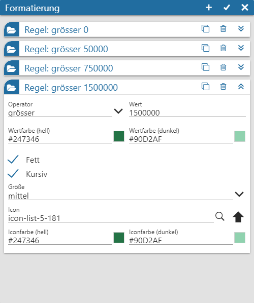
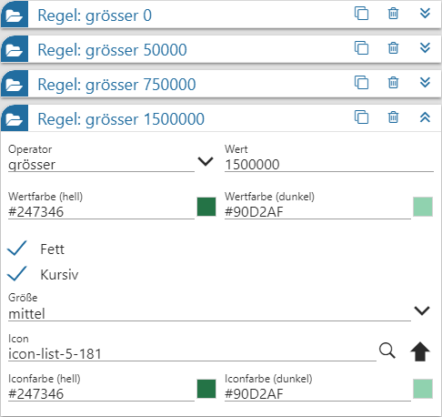

Power Report - Formatierung - Kachel
Um besondere Measures im Widget Kachel hervorzuheben, steht die Formatierung zur Verfügung. Diese ermöglicht es, Zahlen nach bestimmten Regeln gesondert darzustellen.
Hinweis
Der Aufruf des Fensters erfolgt über die Einstellungen des Kachel-Widgets (Button "Formatierung").

Mit Hilfe der folgenden Einstellungen können x unterschiedliche Formatierungen hinterlegt werden. Hierbei ist jede Formatierung automatisch mit einer Regel verbunden, d.h. kommt nur dann zum Tragen, wenn die Regel zutrifft.
Regeln

Im Regelbereich sind folgende Tätigkeiten möglich:
ü Neue Regeln anlegen
Durch
Anwahl des Buttons  wird eine neue
Regel eingefügt, wobei alle Regel- und Formatierungseinstellungen dem Standard
entsprechen.
wird eine neue
Regel eingefügt, wobei alle Regel- und Formatierungseinstellungen dem Standard
entsprechen.
ü Regel editieren
Um eine Regel
zu editieren wird diese durch Anwahl des Icons  zunächst aufgeklappt. Anschließend
können die gewünschten Anpassungen vorgenommen werden.
zunächst aufgeklappt. Anschließend
können die gewünschten Anpassungen vorgenommen werden.
ü Regel kopieren
Soll eine
bestehende Regel als Ausgangspunkt für ein neue dienen, so kann eine Kopie durch
Anwahl des Icons  erzeugt
werden.
erzeugt
werden.
ü Regeln verschieben
Die Regeln
werden von "oben nach unten" abgearbeitet, wobei jede Regel auf
Gültigkeit geprüft wird! D.h. die Reihenfolge der Regeln ist entscheidend. Eine
Anpassung kann jederzeit per Drag & Drop vorgenommen werden.
ü Regeln löschen
Wenn eine Regel
gelöscht werden soll, so kann dieses durch Anwahl des Icon  erfolgen.
erfolgen.
Pro Regel stehen folgende Einstellungen zur Verfügung:
Ø Operator / Wert
Mit Hilfe der Felder "Operator" und "Wert" wird die Bedingung der Regel definiert.
Ø Wertfarbe (hell) / Wertfarbe (dunkel)
Mit Hilfe dieser Felder kann das Farbdesign des Werts beeinflusst werden.
Ø Attribute ("Fett" bis "Größe")
Die Felder "Fett" "Kursiv" und "Größe" steuern die Attribute des Werts.
Ø Icon
Wenn vor dem Wert ein Icon dargestellt werden soll, so kann dieses hier hinterlegt werden.
Ø Iconfarbe (hell) / Iconfarbe (dunkel)
Mit Hilfe dieser Felder kann das Farbdesign des Icons beeinflusst werden.
Buttons
Ø neue Regel
Durch Anwahl des Buttons wird eine neue Regel eingefügt, wobei
alle Regel- und Formatierungseinstellungen dem Standard entsprechen.
Ø Ok
Durch Anwahl des Buttons "Ok" werden die Regeln gespeichert und das Fenster geschlossen. Angewendet werden diese (neuen) Formatierungen bei der nächsten Aktualisierung des Olaps.
Ø Ende
Durch Anwahl des Buttons "Ende" wird das Fenster geschlossen und nicht gespeicherte Änderungen verworfen.